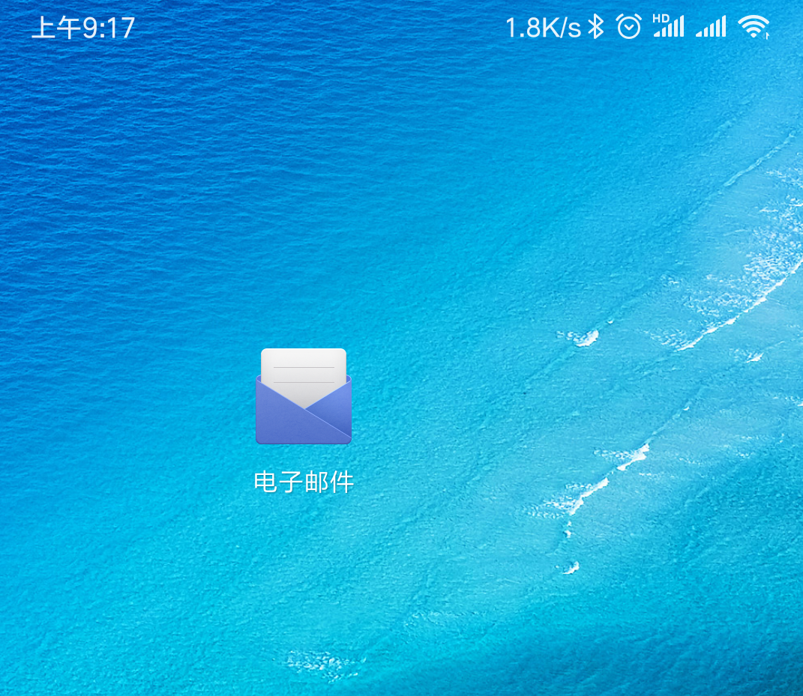
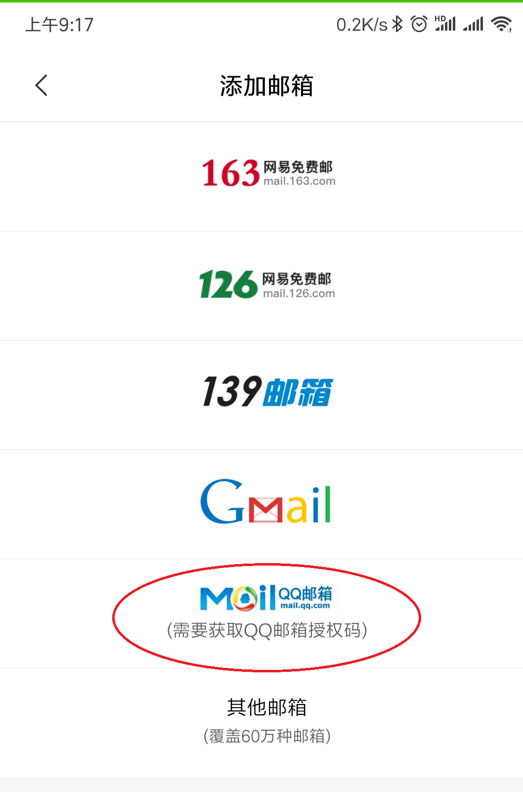
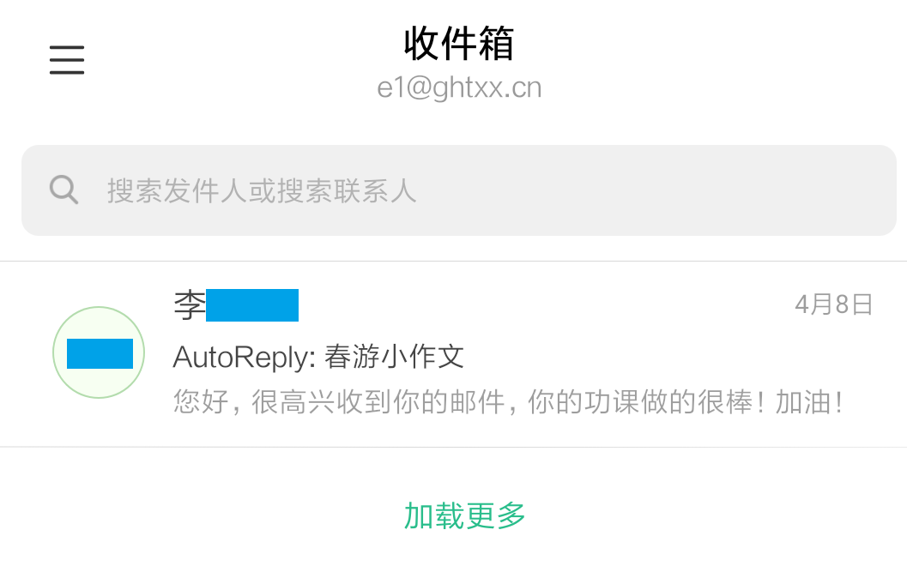

电子邮件在百度百科中的介绍如下：
| 中文名： 电子邮件 | 标 志： @ |
| 外文名： Electronic Mail | 属 性： 网络应用 |
| 外语缩写：E-Mail 或 email | 地址格式： 用户标识符 + @ + 域名 |
在线使用email是一种最常见的方式，这种方式不限时间、地点、电脑，随时可用，但每次都要输入密码有点麻烦不是吗？当我们有了自己的电子设备时，就可以使用一些更多快捷的方法了，下面我们来学习在自己的电脑和手机上使用email的方法吧：
一、在自己的windows 电脑上使用 Foxmail 软件： 看图来一步步试试吧!
二、在自己的手机上使用电子邮件：智能手机已经深度进入我们的生活，在手机上进行学习和交流时也离不开电子邮件，我们用小米手机为例，大部分的智能手机设置方法都是类似的，回家试试吧！
智能手机中通常都自带有电子邮件的APP，就像foxmail一样：

打开邮件app后、添加邮箱时选择QQ邮箱（本次以小米手机最新系统为例，不同手机可能有所差别）：

按提示输入自己的邮箱帐号（即机房座位号）
把后面的@qq.com修改成我们的@ghtxx.cn，并填入正确的密码

正确添加后就可以查收自己的邮件了！
